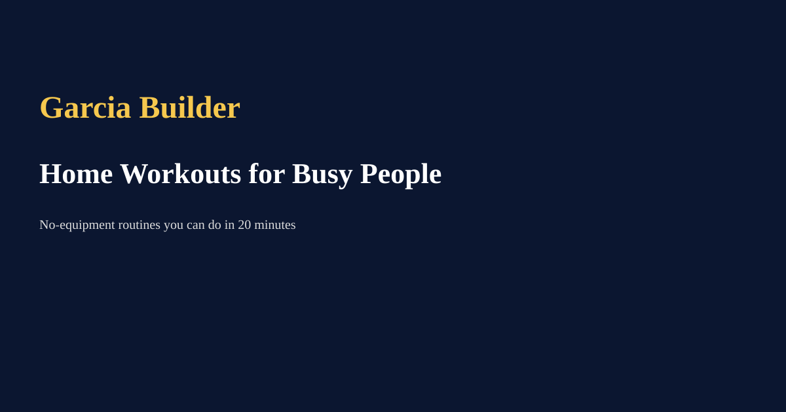

Home Workouts for Busy People — 20 Minute Routines
By Andre Julio Garcia | June 2026

Principles
Short sessions can be highly effective when focused on compound movements, intensity, and consistency. Bodyweight circuits and AMRAPs work well.
Sample 20‑minute session
- Warm‑up (3 min): dynamic mobility
- 3 rounds AMRAP (15 min): 10 push‑ups, 15 air squats, 10 reverse lunges, 30s plank
- Cool down (2 min): stretch
Progression
Increase reps, rounds, or add slow tempos / unilateral variations to keep progressing without equipment.
← Back to Blog